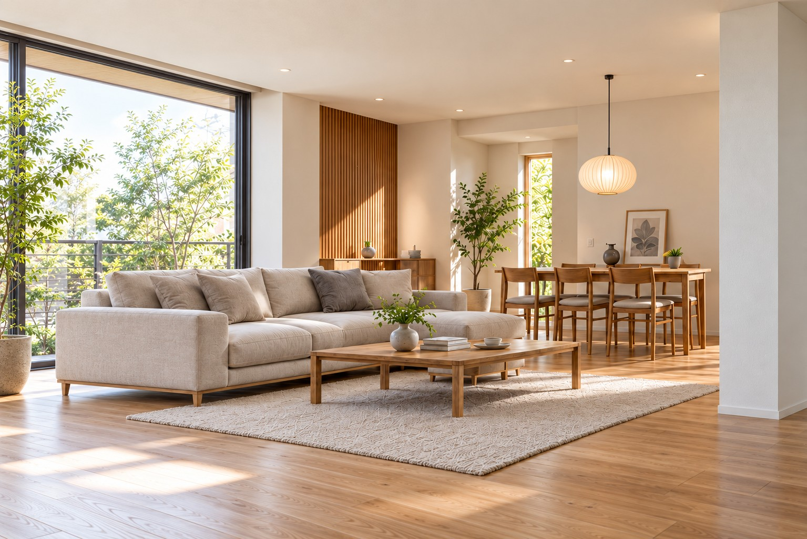

SPACEISEDITABLE.
空間は、
もっと自由だ。
壁・床・天井を仕上げる、マークスインテリア。
SENDAI, MIYAGI / 内装仕上工事
02 / CEILING & MATERIAL
素材から、
天井を考える。
天井内装仕上げ見上げる景色まで、
見上げる景色まで、
心地よく。
光を受け止める色、奥行きを生む質感。
天井から、空間の印象を整える。
03 / WALL FINISH
壁から、
変わる日常。
壁張り工事一枚の壁で、
一枚の壁で、
空間が変わる。
クロスの色、木の表情、触れたときの質感。
暮らしに似合う仕上げを考える。
04 / PARTITION
ひとつの空間に、
新しい可能性。
間仕切り工事仕切ることで、
MAKE ROOM FOR POSSIBILITIES.
仕切ることで、
広がる使い方。
動線、光、これからの暮らし。
空間のつながりを、もう一度デザインする。
05 / ACOUSTIC
静けさを、
設計する。
防音工事静けさも、
静けさも、
空間の品質。
聞きたい音と、抑えたい音。
使い方に合わせた、音との付き合い方。
06 / JAPANESE FINISH
和の心地よさを、
いまの暮らしに。
畳・ふすまの工事受け継ぐ質感。
受け継ぐ質感。
新しい表情。
畳のやさしさ、ふすまの美しさ。
毎日に寄り添う、和の仕上げ。